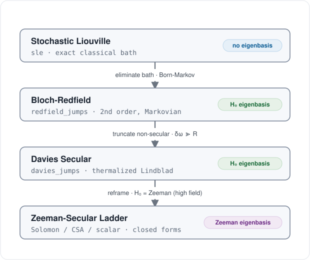
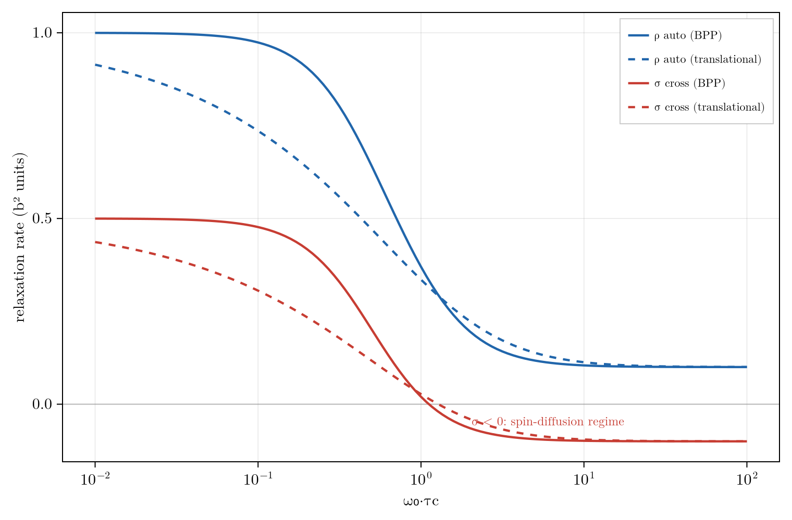

Relaxation Backends
These backends are one physics at successive approximations; choose one by mechanism and regime below, then read The Reduction Ladder for how the tiers reduce and where a mismatch returns a wrong number without erroring. API docstrings are on the Relaxation & Dissipators page, the theory in References ("Open-system relaxation"); each mechanism also has a coherent Hamiltonian counterpart (dipolar / csa) on the Hamiltonian Terms page.
Choosing a Backend
- High field, well-separated frequencies, a lattice-modulated coupling: a first-kind model (
DipolarRelaxation/CSARelaxation/ScalarRelaxation). At ultralow field or through level crossings, preferredfield_jumps(non-secular, completely positive) or the exact stochastic route. - A fast-relaxing partner to eliminate (radical, quadrupolar): a second-kind model (
ScalarSecondKindcontact,DipolarSecondKindthrough-space;mean_field_reduceemits the contact channel automatically when it eliminates an electron). - Cross-correlated mechanisms (dipole-CSA interference): a Kossakowski matrix (
kossakowski_matrix) fed todissipators_from_kossakowski: the interference lives in the off-diagonal rate-matrix entries and cannot be obtained by summing independent channels. - A discrete classical bath (conformational exchange, QMEC tunneling):
sle/propagate_sle, exact at any field.
The Reduction Ladder

From the exact top to the high-field closed forms at the bottom, two things change independently: the basis the generator is written in (none at the top, then the $H_0$ eigenbasis, then the Zeeman eigenbasis, on the nodes) and the approximation at each step (an elimination or truncation, on the arrows). The exact top is frame-agnostic, since a change of frame is only a unitary on the same generator.
Reading down: the exact stochastic Liouville equation holds at any field; eliminating the bath in a fast, Gaussian limit gives the second-order Bloch-Redfield generator in the $H_0$ eigenbasis; truncating the non-secular cross-terms, those whose Bohr gap $\delta\omega = \omega_{ab} - \omega_{cd}$ exceeds the rate $R$, makes it secular (Davies); reframing to the Zeeman eigenbasis, valid only when Zeeman dominates, collapses it to the closed forms. Below the Davies line the treatment is high-field-only; above it, it holds to ultralow field (ULF). This exact top is also where the Nakajima-Zwanzig projection enters, since Redfield and Lindblad are the Born-Markov limit of its memory kernel (see Relation to Relaxation Theory).
The bottom arrow is a validated gate. redfield_jumps takes the drift H0, the Hermitian coupling operators, the bath spectral density, and N; with a pure-Zeeman drift it reproduces the Zeeman-secular closed forms to rtol = 1e-6:
julia> using RestrictedSpinDynamics
julia> N = 2; H0 = hamiltonian(zeeman(N, [100.0, 0.0])); # dominant Zeeman = high field
julia> ops = dipolar_operators(N, 1, 2; coords = [(0.0,0.0,0.0), (0.0,0.0,2.0)], gammas = [2.675e8, 2.675e8]);
julia> jumps = redfield_jumps(H0, ops, BPP(1e-9), N); # eigenbasis Redfield, secular (:davidovic)
julia> jumps isa Vector{Tuple{PauliDict,Float64}}
trueAt a pure-Zeeman H0 the resulting σ, ρ match solomon_rates to rtol = 1e-6, and csa_operators reproduces the CSA R1/R2. These jumps are completely positive: the default :davidovic geometric-mean rate equals the exact secular rate at wide Larmor gaps (reproducing Solomon and CSA) and stays positive and accurate as the gaps close toward ULF, where the naive Bloch-Redfield tensor goes non-positive. :nathan_rudner is the alternative (universal-Lindblad, one dressed jump per operator); method selects. The ladder classifies by secularity; the orthogonal axis, Abragam's first versus second kind, is below.
Spectral Densities
A RelaxationModel turns a correlation time into rates through a SpectralDensity: BPP is the fixed-distance rotational (Bloembergen-Purcell-Pound) Lorentzian, and Translational is the Hwang-Freed density for a diffusing partner (outer sphere). Pass tau_c for BPP or $J$ / $\omega_0$ directly; the same model then feeds relaxation_jumps.
Inner versus outer sphere selects the density. A bound, fixed-geometry partner uses a fixed distance and the rotational BPP density ($\tau_c^{-1} = \tau_r^{-1} + T_{1e}^{-1}$); a freely diffusing radical (dissolved trityl or O$_2$, the hyperpolarized-$^{13}$C lifetime case) has no fixed distance and uses the Translational Hwang-Freed density with $\tau_D = a^2/D$ ($a$ the distance of closest approach). outer_sphere_second_kind assembles the outer-sphere channel and outer_sphere_r1 returns the per-mM relaxivity (validated: Gd$^{3+}$/water $^1$H gives $r_1 \approx 2\ \text{mM}^{-1}\text{s}^{-1}$, the literature value). mean_field_reduce emits the inner-sphere contact channel when it eliminates a hyperfine-coupled electron.
The choice of density reshapes the dispersion: the diffusion hallmark is the $\sqrt{\omega}$ roll-off of Translational against the Lorentzian of BPP (both normalized to $J(0)=\tau_c$). The cross-rate $\sigma$ from solomon_rates changes sign near $\omega_0\tau_c \approx 1$: positive NOE in extreme narrowing, spin-diffusion at slow tumbling.

The Solomon cross-rate $\sigma$ and the auto-relaxation rate against $\omega_0\tau_c$, for the BPP and Hwang-Freed spectral densities. $\sigma$ crosses zero near $\omega_0\tau_c \approx 1$.
First versus Second Kind
Orthogonal to the ladder's secularity axis is what makes the coupling fluctuate. A first-kind mechanism has the lattice modulate the coupling itself; the lattice function is a Gaussian process, so the second-order (Redfield) rate is exact. A second-kind mechanism eliminates a fast-relaxing partner whose state modulates the field it exerts; the partner is a single spin, so its bath is telegraph noise and the rate holds only in the fast-partner limit (the eliminate-versus-joint test maps that window).
A bilinear two-spin coupling splits into three multipole ranks, $\mathbf 1 \otimes \mathbf 1 = \mathbf 0 \oplus \mathbf 1 \oplus \mathbf 2$ (scalar, antisymmetric, dipolar), so a paramagnetic center relaxes a nucleus through two second-kind channels: Fermi contact (rank 0) and through-space dipolar (rank 2), both emitting grade-1 single-spin jumps once the partner is eliminated. The dipolar channel samples the partner both transversely ($1/T_{2e}$) and longitudinally ($1/T_{1e}$), so DipolarSecondKind takes two densities $J_t$ and $J_l$ (its longitudinal rate is the Solomon-Bloembergen-Morgan form); collapsing them to a single $\tau_c$ loses accuracy once the two correlation times differ.
| Kind | What fluctuates the coupling | Rank | Model | Correlation time |
|---|---|---|---|---|
| First | lattice modulates the coupling | 2 (tumbling) | DipolarRelaxation, CSARelaxation | $\tau_r$ |
| First | lattice modulates the coupling | 0 (exchange / QMEC) | ScalarRelaxation | $\tau_{\text{ex}}$ |
| First | lattice modulates the EFG (single-spin) | 2 (quadrupole) | QuadrupolarRelaxation | $\tau_r$ (or $\tau_{\text{ex}}$) |
| Second | eliminated partner's state | 0 (contact) | ScalarSecondKind | partner $T_{1e}/T_{2e}$ |
| Second | eliminated partner's state | 2 (through-space) | DipolarSecondKind | partner $T_{1e}/T_{2e}$ or $\tau_D$ |
Higher-Spin Quadrupolar Relaxation
Quadrupolar relaxation of a spin $\ge 1$ nucleus (QuadrupolarRelaxation / quadrupole_relaxation, with the Higher-Spin backends) is first kind, rank 2, and the only single-spin interaction here: the nuclear quadrupole moment contracted with the lattice electric field gradient, modulated by reorientation ($\tau_r$) or exchange ($\tau_{\text{ex}}$). It has no second-kind counterpart, since that split needs a bilinear two-spin $I\!\cdot\!S$ coupling. A quadrupolar nucleus enters the second kind only as the eliminated partner: a spin-1/2 $J$-coupled to a fast-relaxing quadrupolar nucleus ($^1$H-$^{14}$N, $^1$H-$^{35}$Cl) is handled by feeding its fast $T_1/T_2$ to ScalarSecondKind (Abragam's scalar relaxation of the second kind).
Silent-Error Correspondences
A tier mismatch raises no error; it returns a plausible number for the wrong regime. The correspondences below are where that happens.
Frequency Sampling by Backend
A relaxation model evaluates its spectral density at transition frequencies, and the backends disagree on which. The Zeeman-secular ladder samples at the fixed Zeeman gaps; the eigenbasis Redfield route samples at the true eigen-gaps of the drift, which include the coupling. With drift $H_0 = H_Z + H_J$ and Larmor frequency $\omega_0$,
\[\text{Zeeman-secular:}\quad J\ \text{evaluated at}\ \{\,0,\ \omega_0,\ 2\omega_0\,\},\]
\[\text{eigenbasis Redfield:}\quad J\ \text{evaluated at the eigengaps of}\ H_0 \ \xrightarrow[\ ]{\ \text{ULF}\ }\ \sim \omega_{ST}\ (\propto J) ,\]
where $\omega_{ST}$ is the singlet-triplet gap, set by the coupling $J$. At ultralow field the coupling-to-Zeeman ratio is order one by design, so the two frequency sets diverge and Zeeman-secular sampling fails; the eigenbasis Redfield route is the fix. Build the jumps in the eigenbasis instead, from the same mechanism operator lists:
jumps = redfield_jumps(N, dipolar_operators(geom, model); H0 = zeeman(N, freqs) + jcoupling(...))DipolarRelaxation, CSARelaxation, and ScalarRelaxation are high-field tools; at ULF use redfield_jumps with dipolar_operators or csa_operators. The worked ZULF case is in Zero- and Ultralow-Field (ZULF) Simulations.
Exact versus Approximate
Each entry adds one assumption to the one above.
- Exact classical bath.
sle/two_state_exchange->propagate(or the explicitpropagate_sle): a Kubo-Anderson stochastic Liouville equation for classical M-state noise (two-state tunneling, motional narrowing). No Markov, secular, or weak-coupling assumption; valid at any field and through crossings. The preferred QMEC-lifetime backend. - Phenomenological non-Markovian (post-Markovian).
pome: the Markovian Lindbladian convolved with an exponential memory kernel (Shabani-Lidar), interpolating between the Markovian limit (γ -> ∞) and memory-retaining dynamics at finiteγ. A phenomenological bridge; use it when a measured memory time is the input. Experimental. - Projection reduction (first-principles non-Markovian). When the "bath" is a retained sub-basis rather than an external reservoir, the Nakajima-Zwanzig split folds it back from the Liouvillian itself, not from a phenomenological memory time; see Nakajima-Zwanzig Formalism. Experimental.
- Second order and Markov, eigenbasis-secular.
redfield_jumps: weak-coupling in the bath and secular in the eigenbasis of the full drift, valid at coupling-to-Larmor ratios of order one; it is weak in the bath, not in the coupling $J$. Withthermalize = trueit becomes the thermalizingdavies_jumps(detailed-balance generator, full-$H_0$ frame) /bengs_levitt_jumps(the Bengs-Levitt Lb method, dominant-$H$ frame), relaxing to the Boltzmann state. - Redfield with the added Zeeman-secular assumption.
DipolarRelaxation,CSARelaxation,ScalarRelaxation: add the "Zeeman dominates" assumption, which breaks at ultralow field. - A representation, independent of approximation level.
kossakowski_matrix/dissipators_from_kossakowski: the GKSL rate matrix and its eigen-jump decomposition. Any backend above can be written through it, and it is the seam for cross-correlated channels.
The phenomenological pome rung takes a prebuilt Markovian generator and a memory rate gamma (the kernel is γ·e^{-γt}, so the memory time is 1/γ), embedding it as a local generator on the state plus one auxiliary block:
julia> using RestrictedSpinDynamics
julia> b = restricted_basis(1, 1);
julia> L = build_liouvillian(b, PauliDict(); jumps = decay(1, 1:1, 1.0)); # the Markovian core
julia> m = pome(L; gamma = 5.0); # finite gamma retains memory; gamma -> Inf is Markovian
julia> (m.d, size(m.M)) # physical block size, enlarged generator size
(4, (8, 8))Complete Positivity
- Zeeman-secular ladder jumps: completely positive by construction.
:nathan_rudner: manifestly completely positive, one dressed jump per operator.:davidovic(default): completely positive by construction; its geometric-mean rate keeps the rate matrix positive semidefinite and reduces to the exact secular (Solomon / CSA) rate when the Bohr gaps are wide.- Naive non-secular Bloch-Redfield: not completely positive, which is why the Kossakowski path guards the minimum eigenvalue against $-\texttt{tol}$ before emitting jumps.
- Stochastic Liouville: completely positive, being a physical classical mixture.
Detailed Balance and Thermalization
The Zeeman-secular backends carry a KMS factor $e^{-\beta\omega/2}$ (the thermalize flag) and relax to the Boltzmann state $\rho_\infty \propto e^{-\beta H_0}$. The eigenbasis route gets the same factor from redfield_jumps(...; thermalize = true, beta), exposed as two presets: davies_jumps (secular in the full $H_0$ eigenbasis, correct at ultralow field) and bengs_levitt_jumps (secular in the dominant Hamiltonian, the Bengs-Levitt "Lb" method, JMR 310 (2020) 106645). Without thermalize, redfield_jumps gives infinite-temperature symmetric rates; for a thermal fixed point with cross-correlated mechanisms, KMS-weight the kossakowski_matrix instead.
Both presets build directly from the drift Hamiltonian, the coupling operator(s), a spectral density, and the inverse temperature beta:
julia> using RestrictedSpinDynamics
julia> H0 = hamiltonian(zeeman(1, [10.0]));
julia> jd = davies_jumps(H0, spin_op(1, 1, 1), BPP(1e-3), 1; beta = 0.05); # full-H0 eigenbasis
julia> jd isa Vector{Tuple{PauliDict,Float64}}
true
julia> HA = hamiltonian(zeeman(2, [100.0, 100.0])); # dominant Zeeman = the secular frame
julia> length(bengs_levitt_jumps(HA, [spin_op(2, 1, 1), spin_op(2, 2, 1)], BPP(1e-3), 2; beta = 0.02))
4Independent Sum versus Cross-Correlation
Mechanisms fed as separate operators relax independently and their dissipators add, correct for isotropic tumbling. Cross-correlated relaxation, the interference between two mechanisms driven by the same motion, cannot be had that way; it lives in the off-diagonal entries of the GKSL rate matrix. It is the dipole-CSA interference TROSY exploits to keep one multiplet component sharp in large proteins, and the cross-correlation that leaks nuclear singlet order (giving a would-be long-lived state a finite lifetime):
\[\text{separate operators:}\quad \mathcal D[A] + \mathcal D[B]\ \ (\text{independent}); \qquad \text{rate matrix } \rho_{AB}:\quad \mathcal D[A+B]\ \text{cross terms},\]
with $\rho_{AB}=0$ recovering the independent sum and $\rho_{AB}=\pm 1$ the fully correlated (TROSY) limit. The differential ($\eta$) rate of a dipolar-CSA pair is assembled through the rate matrix:
julia> using RestrictedSpinDynamics
julia> A = spin_op(2, 1, 3); B = spin_op(2, 2, 3); # the two mechanism operators
julia> C = kossakowski_matrix([1.0, 1.0], [1.0 0.7; 0.7 1.0], 0.1); # amplitudes, correlation ρ_AB, J(ω)
julia> jumps = dissipators_from_kossakowski([A, B], C); # eigen-jumps of the rate matrix
julia> length(jumps) # cross-correlated -> mixed modes
2Practical Notes
Convention Traps
These are code-side conventions whose factors are easy to drop.
spin_opis $I_a = \sigma_a/2$ (coefficient one half);spin_pmis $I_\pm$ with unit matrix element. That mismatch is why the single-quantum dipolar jumps carry an explicit factor of two.zeeman(N, freqs)takes frequencies in Hz and multiplies by $2\pi$ internally, so a Bohr gap of $\omega_0$ (rad/s) needsfreqs = omega0 / (2pi). Redfield then samples $J$ at those gaps in rad/s.- A dephasing jump $\mathcal D[I_z]$ contributes at half its jump rate: a rate-$w$ $I_z$ jump adds $w/2$ to $R_2$. This factor is exactly what sets the CSA secular weight $w_0 = 8q/45$.
Grade and Sector
- Every pair operator here is grade-2, so
restricted_basisneeds $k_{\max}\ge 2$. - Longitudinal observables ($I_z$, singlet order) live in the weight-0 sector, and the ladder jumps close it, so
check_sector = trueis safe. Only afield_ramptogether with a transversedrive_fieldneeds the full basis withcheck_sector = false.
Rates and Fixed Points Without Propagating
A large physical scale separation (electron Zeeman far above nuclear far above relaxation) makes integrating the full trajectory wasteful; two one-liners skip it. initial_rate(basis, L, c0, O) reads the initial slope straight from the dissipator, $-\operatorname{Re}\langle O, \mathcal L c_0\rangle / \operatorname{Re}\langle O, c_0\rangle$: one $\mathcal L c_0$ (and, for Redfield, one eigendecomposition) per field point, the idiom for $T_1$/$T_2$ versus field. steady_state(basis, L) solves $\mathcal L c = 0$ with a trace constraint as a sparse linear solve, jumping past the stiff transient. rate_vs_field runs the initial_rate readout across a whole sweep, returning the rate (or a cross-relaxation-matrix row) per point: pass a make_L(B) when the coherent H(B) disperses (the eigenbasis-Redfield case), or a fixed H plus a make_jumps(B) for a closed-form NMRD / relaxivity profile (the nitroxide NMRD gate uses the latter). sweep_field is the general form, any readout over the sweep: a steady_state-based readout gives a transferred- polarization profile (a SABRE or level-anti-crossing field sweep) instead of a rate.
julia> using RestrictedSpinDynamics
julia> b = restricted_basis(2, 2);
julia> H = hamiltonian(zeeman(2, [0.0, 10.0]), jcoupling(2, 1, 2, 5.0));
julia> L = build_liouvillian(b, H; jumps = dissipator(decay(2, 1:2, 0.5)));
julia> c0 = state(b, polarized(1:2, :z)); O = total_spin_op(2, :z);
julia> round(initial_rate(b, L, c0, O); digits = 4) # the T1 slope, no propagation
1.0
julia> ss = steady_state(b, L); # jump straight to the fixed point
julia> round(real(expect(b, ss, O)); digits = 6) # fully relaxed to the -z ground
-1.0This steady_state is $\rho_\infty = \ker\mathcal L$ of a linear Lindbladian; the nonlinear mean-field operating point of a feedback (RASER) loop, where the generator depends on the state, is fixed_point / feedback_threshold on the Reachability, Control, and the Adaptive Basis page.
Validation
Each backend is checked against a closed form or experiment (test/test_relaxation.jl and the scripts/validation/ gates): dipolar against the Solomon $\sigma$ and $\rho$ rates, CSA against the axial rates, the paramagnetic second-kind models against the SBM closed form and a nitroxide NMRD profile across eight field decades, and redfield_jumps against the Zeeman-secular backends at high field. When you switch tiers, re-check the observable: the reduction ladder is exactly the map of what each tier assumes.